Chapter 5, DSTP2xDemo instructions
- Chapter 5, DSTP2xDemo instructions
- 1、Software system environment
- 2、Operation Instructions
- 3、DSTP2xDemo Function introduction
- 4、DSTP2xDemo Usage Process
- 4.2、Create a New Label
1、Software system environment
- This demo supports Windows and Linux systems. For Windows, it requires a system of Windows XP or above. Its main purpose is template editing.
- If you need to print a PDF, you can configure it in the sdkcfg.xml file. Currently, we support two forms of PDF printing. For internal logical processing of the PDF, set it to "0" in the sdkcfg.xml file. If you need a PDF plugin, you need to configure the plugin path first.
2、Operation Instructions
Windows：
- Unzip the compressed package (the version will be continuously upgraded, and the specific name shall be subject to the actual situation).
- After unzipping, Select and enter the folder of the corresponding architecture system development kit.
- After unzipping, enter the bin\Win32 or bin\x64 folder.
- Finally, double - click DSTP2xDemo.exe to run it.
Linux：
- Unzip the compressed package (the version will be continuously upgraded, and the specific name shall be subject to the actual situation).
- After unzipping, select and enter the folder of the development package for the corresponding architecture system.
- After unzipping, enter the bin folder.
- Right-click in the blank area and select "Open Terminal".
- Enter the command: sudo su, enter the password to switch to the root user. If the permission is insufficient, enter chmod -R 777 * and then execute.
- Enter the command to run:./map.ds, which is used to grant permission to run the program based on the SDK to control the printer connected via USB.
- Enter the command to run:./DSTP2xDemo.out.
3、DSTP2xDemo Function introduction
3.1、Introduction to template functions
3.1.1、Overview
The startup interface is shown in Figure 1.1. The startup interface includes template selection, template editing, template parameter input settings, clearing the output information in the output box, the printing function, and the real-time return of the printer status, etc.
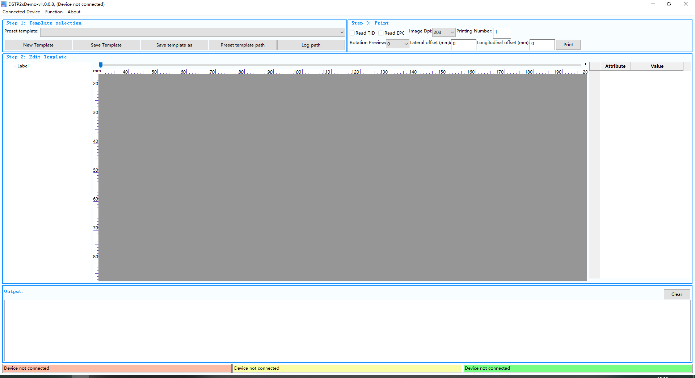
3.1.2、Connect the device
Click in the upper - left corner to enter the device connection selection and choose [Enumerate/Connect to the printer]. Connect according to the actual emulation type of the printer and the required connection method.
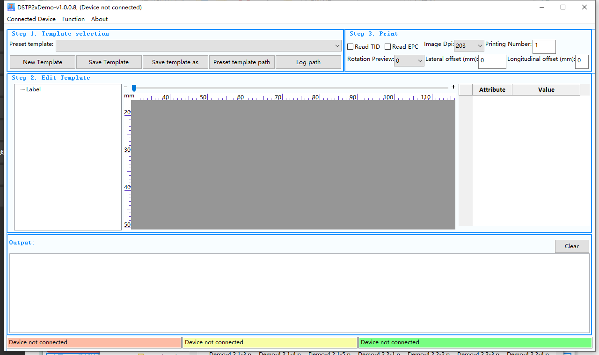
- Emulation selection: This refers to the printing language that the printer can recognize. Select the corresponding emulation type according to the printer settings. Currently, ZPL, TSPL, and ESCPOS are supported. You can print a self-check page to confirm the current emulation type of the machine.
- Printer connection method: Select the corresponding connection according to the actual application scenario. Currently, USB enumeration, network port enumeration within the same network segment, IP direct connection, and serial port direct connection are supported.
3.1.3、Select a preset template or edit a new template on your own.
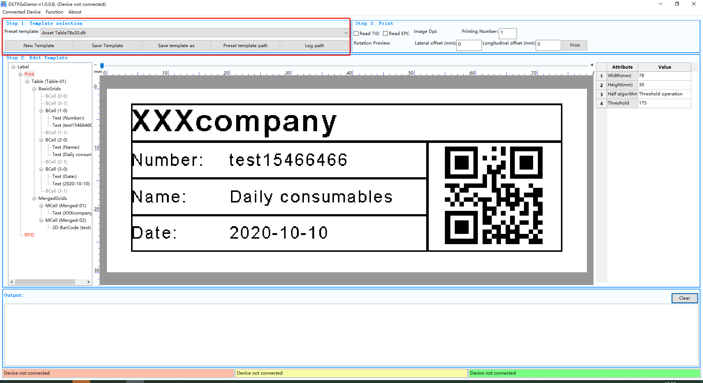
- Preset template: A pre-edited template in the default path. After selection, you can view the relevant parameter attributes.
- New template: Create a blank template and add elements for editing according to the actual printing requirements.
- Save template: Save the template that is currently being edited.
- Save template as: Save the currently edited template to a specified directory.
- Open preset template path: The default directory where the printing demo stores the templates.
- Open log path: Open the interface call log for analysis. Generally, the default path is: C:\Users\username\AppData\Local\Temp\DSSDKTemp\ThermalLog.
3.1.4、Edit the printing and RFID content according to the actual needs.
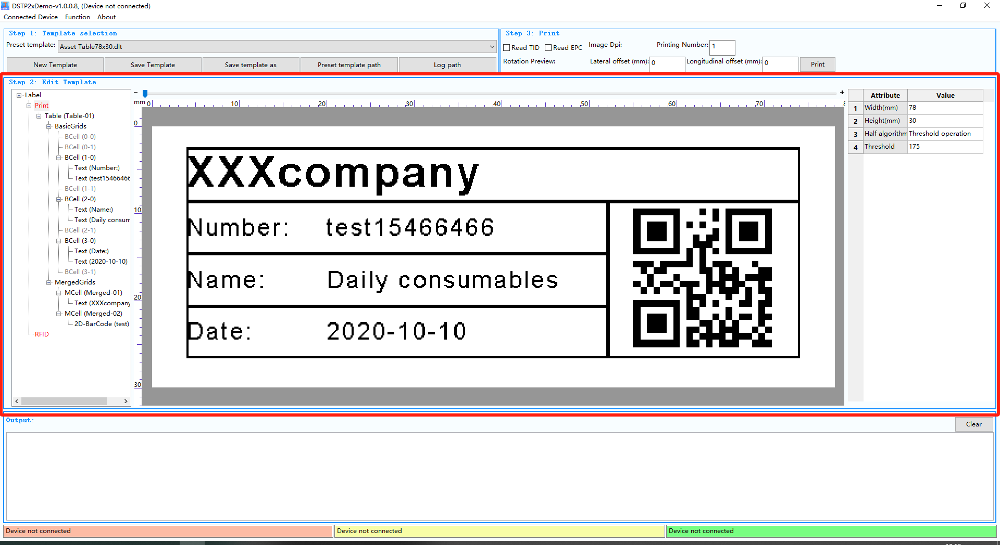
- The Label tree diagram on the left side: Displays all the printing elements and RFID data editing within the current template.
- The middle part is the template preview. After editing the parameters, you need to press the Enter key or click on other parameters to refresh the preview.
- The right side is for setting the parameter attributes of specific elements, which should be edited according to the actual printing requirements.
3.1.5、After editing the template, select the number of printing loops and click to start printing.
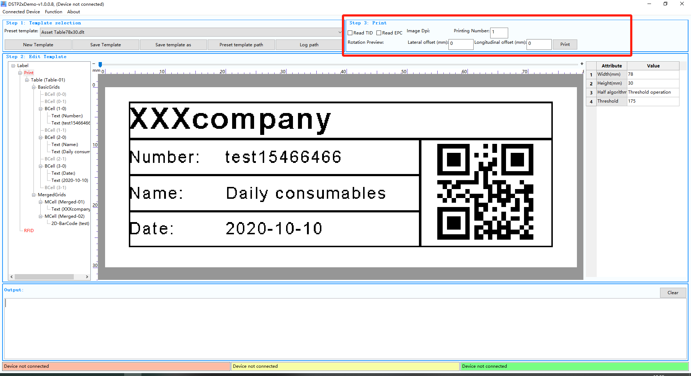
- Read TID/EPC first: After checking this option, the corresponding data will be returned first, and then the printing will be executed (Currently, it does not support checking both options to return data simultaneously).
- Image DPI: Set it to the actual DPI of the printer print head (Currently, the machines have 203dpi, 300dpi, and 600dpi) and convert it to the corresponding printing size.
3.2、Introduction to Other Functions
The other function interfaces are shown in Figure 1.2, including common acquisition functions, RFID functions, PDF printing, and direct data transmission functions. All operations need to be performed after connecting the device.
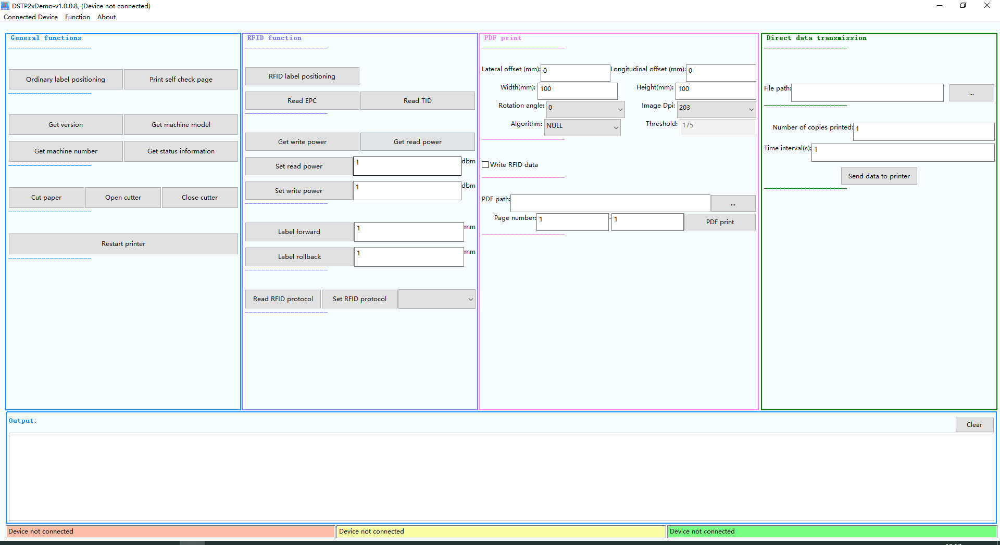
(1) Common Functions
- Ordinary Positioning Label: Position and verify ordinary labels or black mark paper.
- Print Self-check Page: Click to print the self-check page information of the printer.
- Clear Printer Cache: Click to clear the printer cache, and it will return to the data-free state without the need to restart.
- Get Version Number: Obtain the firmware version information of the currently connected machine.
- Get Manufacturer Model: Obtain the manufacturer and model information of the currently connected machine.
- Get Machine Number: Obtain the machine number information of the currently connected machine.
- Immediate Paper Cutting: Used to control the machine's paper cutting template, and the paper cutting action will be executed immediately after the operation; (The machine needs to be equipped with a paper cutter module).
- Turn on the Paper Cutter: Enable the paper cutter function of the printer.
- Turn off the Paper Cutter: Disable the paper cutter function of the printer.
((2) RFID Functions
- RFID Label: Position and verify the RFID label [The machine will feed the paper slowly, so please be patient and wait for the positioning to be completed].
- Read EPC: Directly read the EPC data of the current label.
- Read TID: Directly read the TID data of the current label.
- Get Writing Power: Obtain the writing power of the currently connected machine.
- Get Reading Power: Obtain the reading power of the currently connected machine.
- Set Writing Power: Manually set the writing power of the currently connected machine [The most suitable value will be automatically detected during positioning verification. There is no need to modify it unless necessary].
- Set Reading Power: Manually set the reading power of the currently connected machine [The most suitable value will be automatically detected during positioning verification. There is no need to modify it unless necessary].
(3) PDF Printing
- Input values for the printing offset position, width, height, and rotation angle according to the actual printing size.
- Write RFID Data: If you need to write data during printing, check the option, and a data input box will be displayed. Then, input the data you need to write.
- Select a PDF file, input the printing page number, and then print.
If you need to print a PDF, you can configure it in the sdkcfg.xml file. Currently, two forms of PDF printing are supported. For internal logical processing of the PDF, set it to "0" in the sdkcfg.xml file. If you need a PDF plugin, you need to configure the plugin path first.
(4) Direct Data Transmission
- It is used to directly transmit data files for printing.
4、DSTP2xDemo Usage Process
4.1、Open the template
Double-click to run and open the "DSTP2xDemo.exe", and click the drop-down box in the upper left corner to select a template.
The path of the preset template (dlt file): The./Template folder under the root directory of the DSTP2xDemo.exe.
If you need to open a template file in a custom path, you can select "Open More Templates" to make the selection.
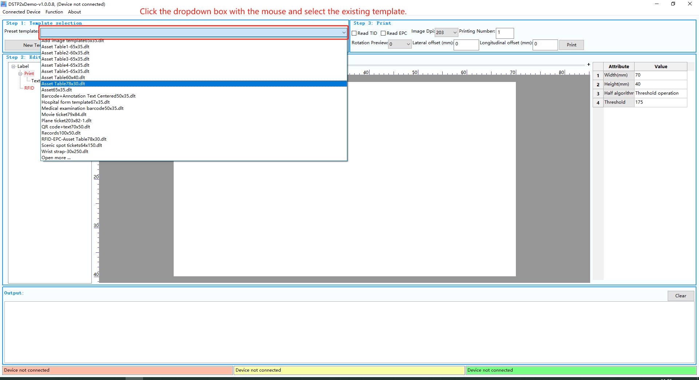
After selecting an existing template, the demo will refresh to display the corresponding preview of the template.
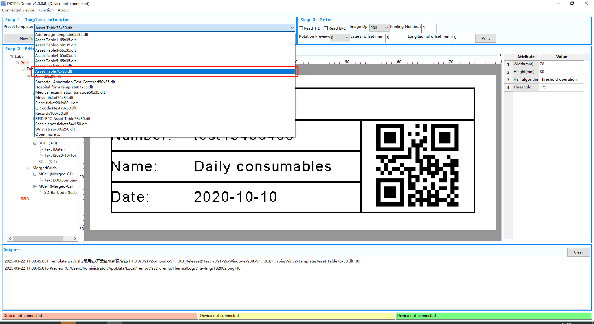
4.2、Create a New Label
4.2.1、Create a template
In the demo interface, click on "New Template".
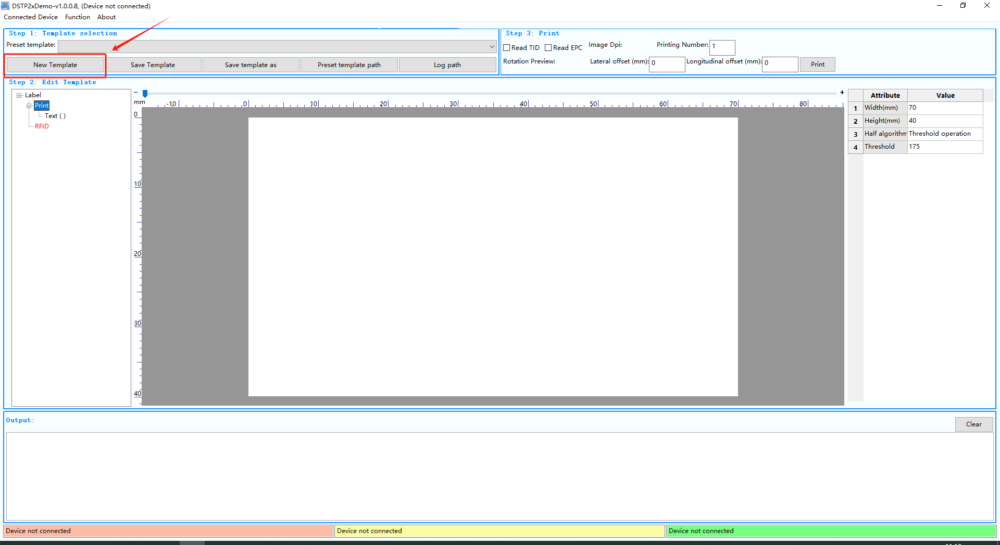
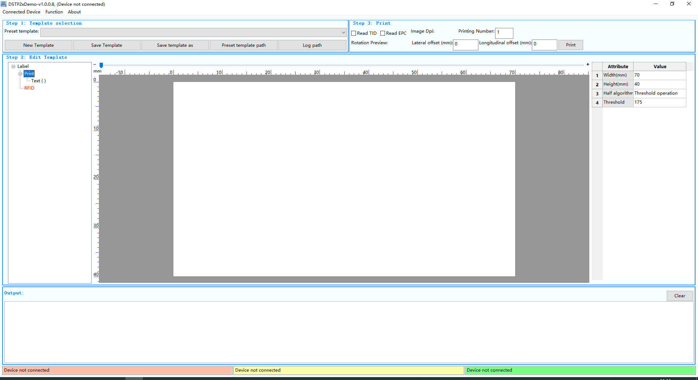
Modify Label Attributes
Steps: Click on "print" in the tree diagram on the left side -> The label element attribute bar will be displayed on the right side of the demo -> Modify the corresponding width and height parameters of the canvas -> Press the Enter key or click on any blank area on the right side, and the modification will be successful -> Check the refreshed effect of the preview. (If the preview does not change, you need to check whether the modification was successful.)
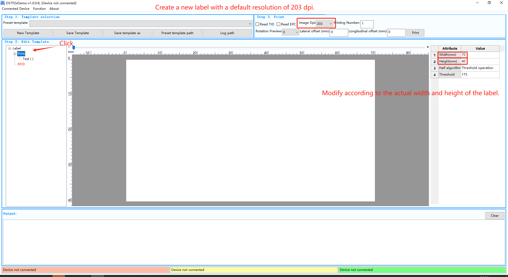
If the label type is a label with side margins, as shown in the following figure: The 9mm side margin of this label is not included in the calculation of the canvas width. When creating a new template, the width and height of the label can be set to 50*50mm.

For labels with side margins, if the content on the left side is not completely printed, adjust the horizontal offset parameter according to the corresponding side margin, as shown in the following figure:
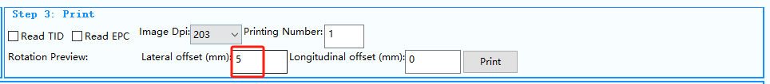
Note：
① Currently, the default DPI for a newly created template is 203dpi. If you need to switch to other DPI for preview and printing, you need to connect the printer first and then switch the DPI.
② The default conversion unit is mm.
4.2.2、Add Text
Right-click on "print" with the mouse -> Click on "Add Text".
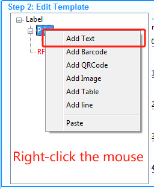
Modify the text attribute parameters.
The default text content is " ". In the text attribute bar on the right side, you can set the coordinates, font, size, content, automatic line break, character spacing, and other effects, etc.
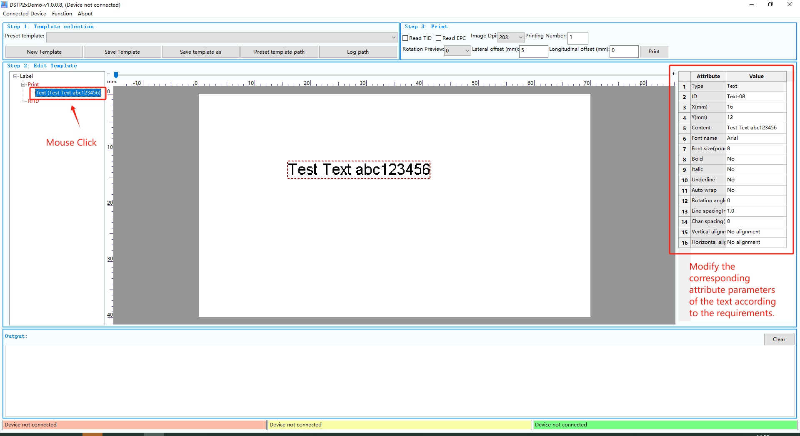
Text automatic line - break
Modify the automatic line break attribute parameters - select "Yes", and enter the width for one - line display. When the text content data exceeds the given width, it will automatically move to the next line for display.
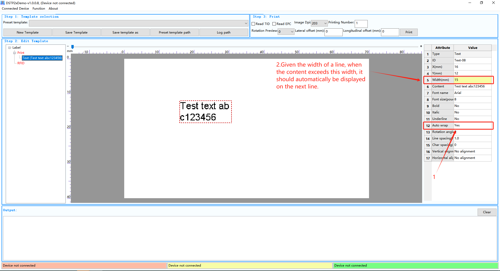
Taking printing a Chinese character in the SimSun font as an example, the size of the font is as shown in the following figure:
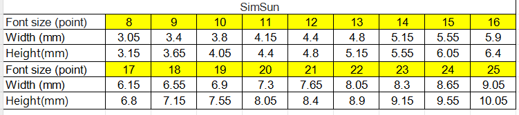
In summary, when the font size is increased by one size, the width increases by 0.25-0.4mm; the height increases by 0.25-0.5mm.
4.2.3、Add Barcode
Right-click on "print" with the mouse -> Click on "Add Barcode".
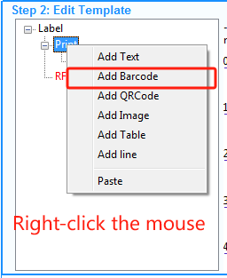
Modify the barcode attribute parameters.
The default barcode type is Code 128, and the barcode content is "1234". In the properties of the barcode column on the right side, you can modify the content, width and height, type, whether to display annotations, rotation angle, and so on of the barcode.
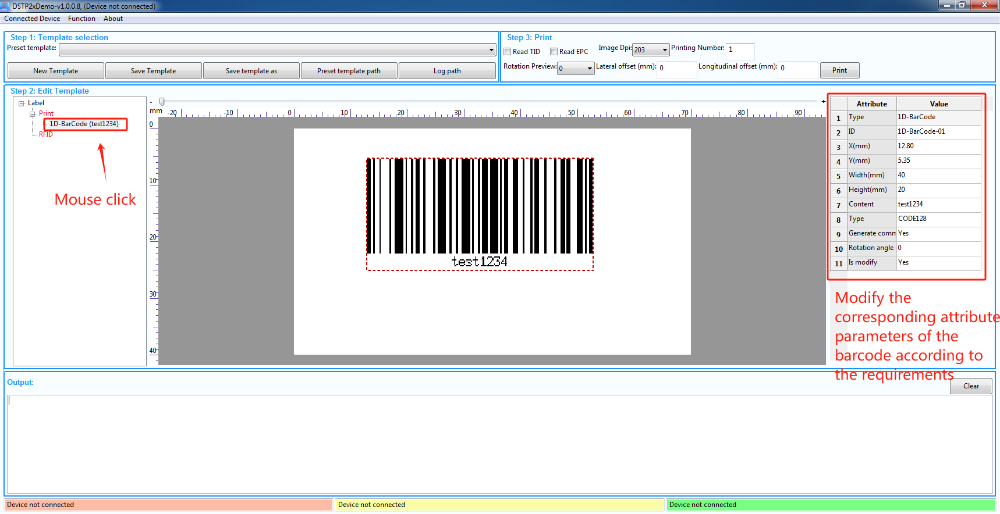
4.2.4、Add QRcode
Right-click on "print" with the mouse -> Click on "Add QRcode".
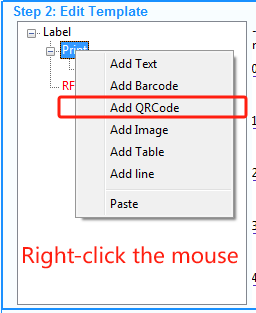
Modify the barcode attribute parameters
The default QR code type is QRCode, and the QR code content is "1234". In the QR code attribute column on the right side, you can modify the content, width and height, type, error correction level, rotation angle, etc. of the QR code. The error correction level is divided into four levels, and the corresponding error correction rates are: L - 7%, M - 15%, Q - 25%, H - 30%.
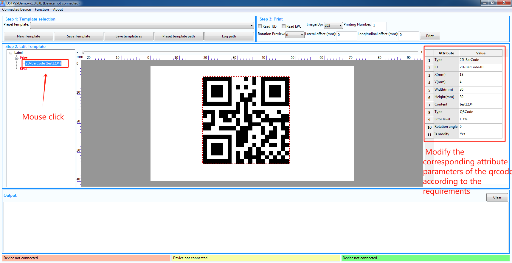
4.2.5、Add Image
Right-click on "print" with the mouse -> Click on "Add Image".
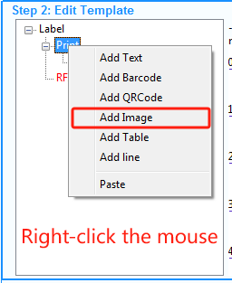
Images can be selected in two ways: local images and base64 image data (in txt format). When you select "base64 TXT file" as the file suffix, all images and txt files will be displayed.
The steps for importing a local image are as follows:
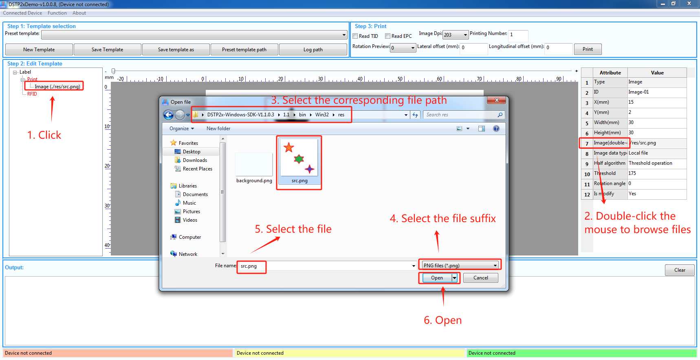
Select local images in formats other than png, jpg and bmp, or import base64 image data.
The steps are as follows:
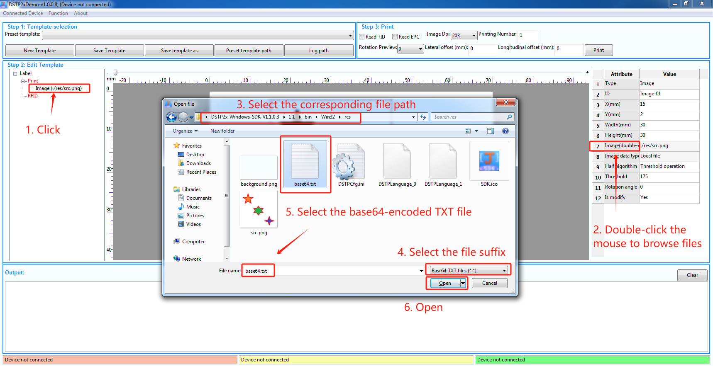
Modify the image attribute parameters.
After importing the image, in the image attribute column on the right side, you can modify the coordinates, width and height, algorithm, rotation angle, etc. of the image.
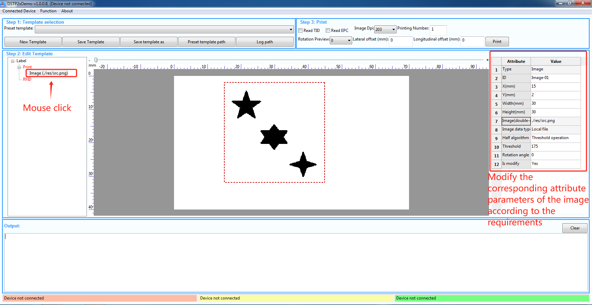
4.2.6、Add Table
Right-click on "print" with the mouse -> Click on "Add Table".
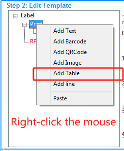
Modify the table attribute parameters.
The default table has 1 row and 1 column. In the table attribute column on the right side, you can modify the coordinates, width and height, number of rows and columns, position of row and column boundary lines, etc. of the table.
In the tree-shaped navigation bar on the left side, each Bcell corresponds to a cell. The initial width and height of each cell are evenly divided according to the total width and height of the table and the number of rows and columns.
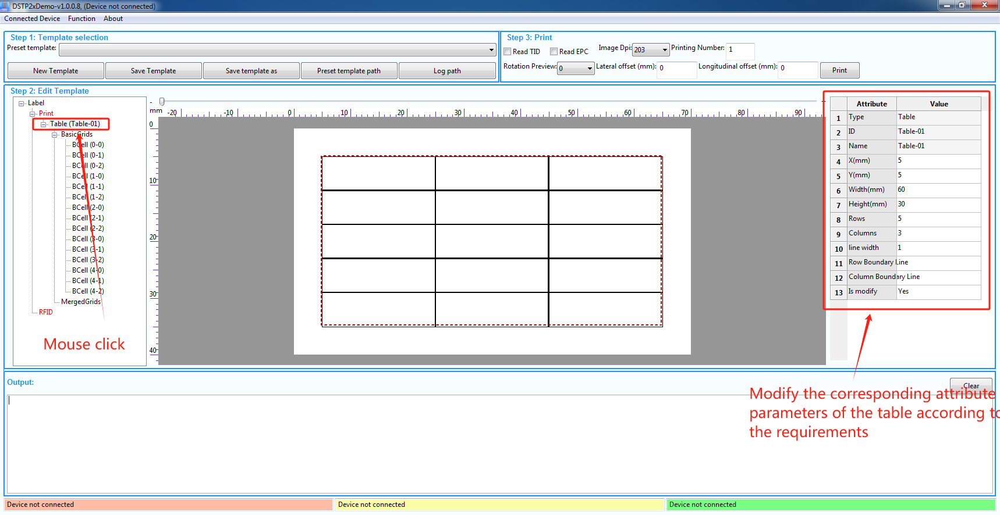

Adjust the row height of the table.
You can adjust the row height accordingly by adjusting the row boundary line.
Row boundary line: In the table, each horizontal line is defined as a row boundary line. Counting down from the top horizontal line of the table: row boundary line 0, row boundary line 1, row boundary line 2... The y-coordinate of the table restricts row boundary line 0. Therefore, the adjustment of the row boundary line can only start from row boundary line 1.
Adjusting the row height: Adjust the row height through the row boundary line. If the row height of a certain row decreases, the entire table will move upward, and if it increases, the entire table will move downward.
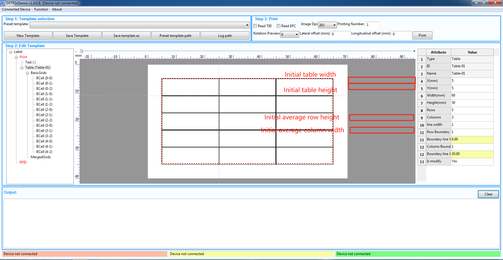
Increase the line boundary by 2mm, increase the overall height of the entire table by 2mm, and move the whole table downward.
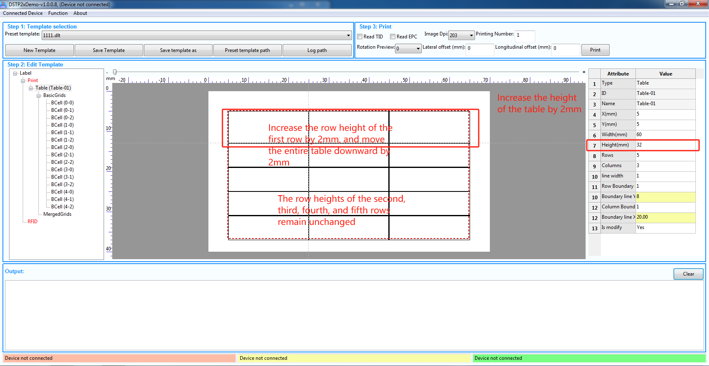
The handle of the label canvas returned by the DSTP2x_CreateLabelContext function.
You can adjust the column width accordingly by adjusting the column boundary line.
Column boundary line: In a table, each vertical line is defined as a column boundary line. Counting from the leftmost vertical line of the table to the right: column boundary line 0, column boundary line 1, column boundary line 2, and so on. The x-coordinate of the table restricts column boundary line 0. Therefore, the adjustment of the column boundary line can only start from column boundary line 1.
Adjusting the column width: By adjusting a certain column boundary line, the column widths of the two adjacent cells of this column boundary line show a relationship of one decreasing while the other increasing. For example, for a table with 5 rows and 3 columns, if column boundary line 1 is adjusted to increase by 5mm, then the width of the first column will increase by 5mm, and the width of the second column will decrease by 5mm correspondingly, and the width of the third column will remain unchanged. If the rightmost column boundary line 3 of this table is adjusted, then only the width of the third column will be affected. When column boundary line 3 increases, the table will extend to the right, and when column boundary line 3 decreases, the table will shrink to the left.
When column boundary line 1 is adjusted, the change in the column width of the table is shown in the following figure:
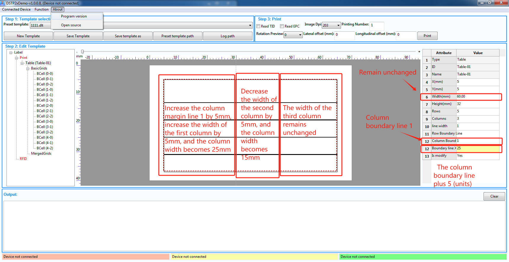
When column boundary line 3 is adjusted, the change of the table is shown in the following figure:
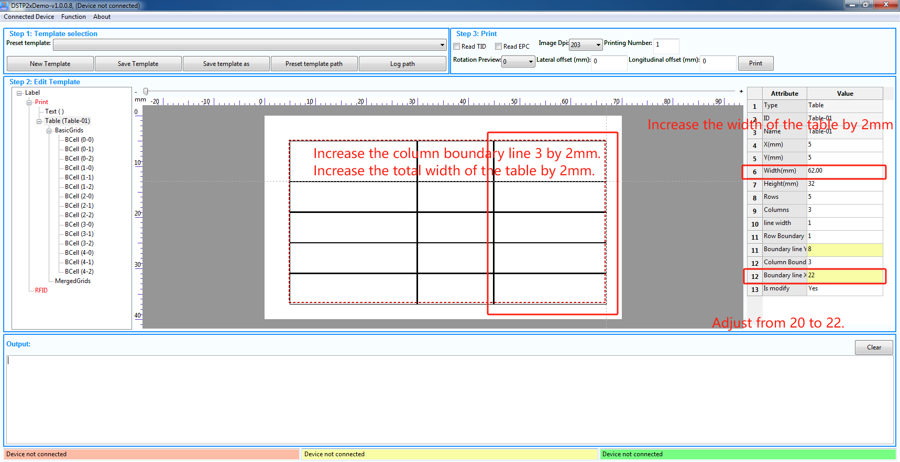
Merge cells
Hold down the Ctrl key, click the cells you want to merge with the mouse. Then right-click with the mouse and select "Merge cells". After several adjacent BCell cells are merged, a new cell MCell will be generated.
Note: Only adjacent cells can be merged.
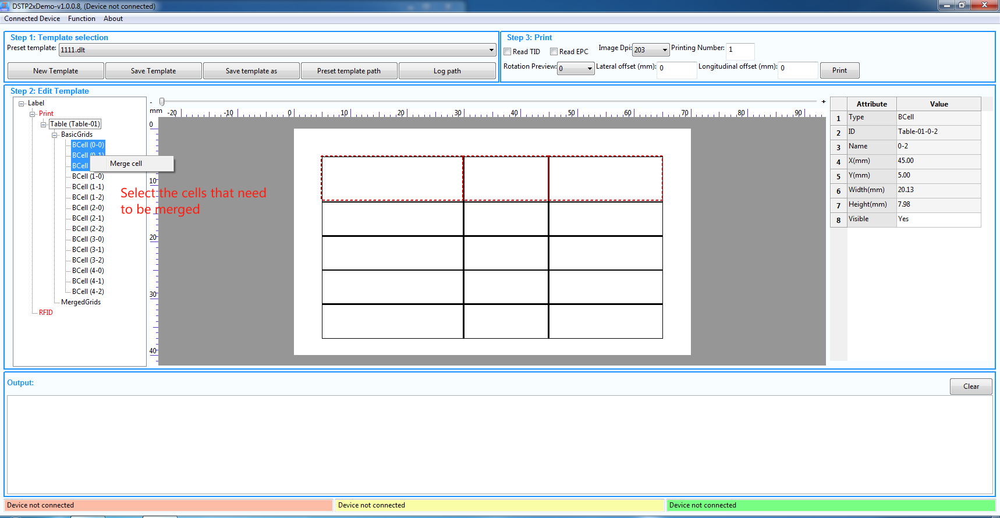
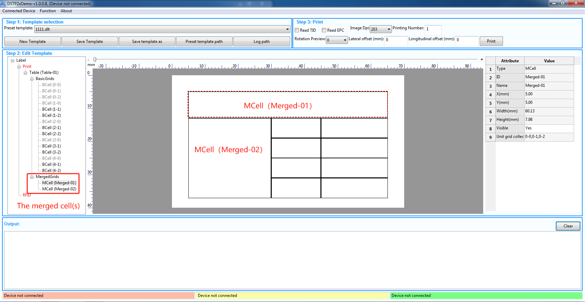
Unmerge cells
If you want to restore the cells after merging, you can right-click on the corresponding MCell, click "Unmerge Cells", and then the cells will be restored to their original state.
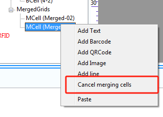
Add text to the table.
Right-click and select a certain cell (BCell/MCell) -> Add text.
When adding text to the table, the initial coordinates are the upper-left corner of the cell, and the width and height of the text box are the same as those of the cell. If you select the vertical and horizontal alignment methods, it will be automatically calculated. The effect is shown in the following figure:
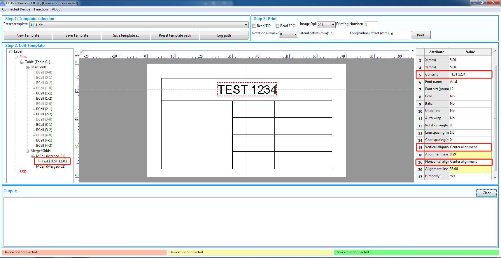
Add a barcode to the table
Right-click and select a certain cell (BCell/MCell) -> Add barcode.
When adding a barcode to the table, the initial coordinates are the upper-left corner of the cell, and the width and height of the barcode are the same as those of the cell. The barcode type is code128. You can modify the attribute parameters of the barcode according to the actual printing requirements. The effect is shown in the following figure:
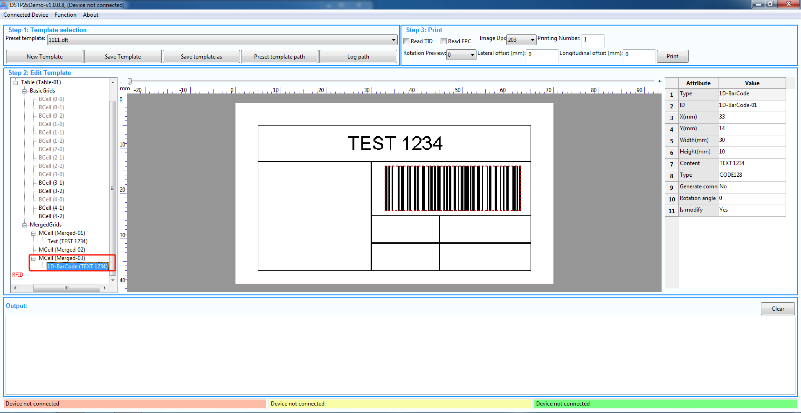
Add a QRcode to the table
Right-click and select a certain cell (BCell/MCell) -> Add a QR code.
When adding a QR code to the table, the initial coordinates are the upper-left corner of the cell, and the width and height of the QR code are the same as those of the cell. The error tolerance level of the QR code is 1. You can modify the attribute parameters of the QR code according to the actual printing requirements. The effect is shown in the following figure:
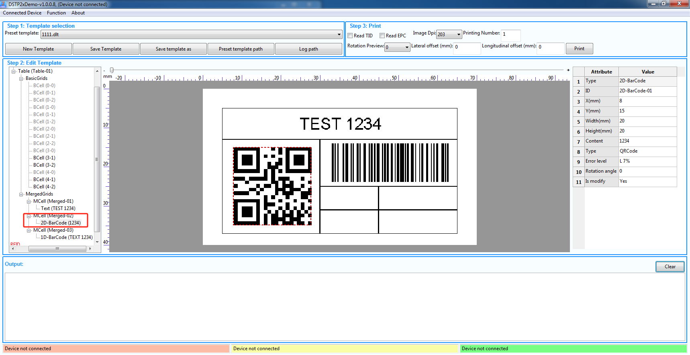
Add an image to the table
Right-click and select a certain cell (BCell/MCell) -> Add an image.
When adding an image to the table, the initial coordinates are the upper-left corner of the cell, and the width and height of the image are the same as those of the cell. The algorithm is in the threshold mode. You can modify the corresponding image attribute parameters according to the actual printing requirements. The effect is shown in the following figure:
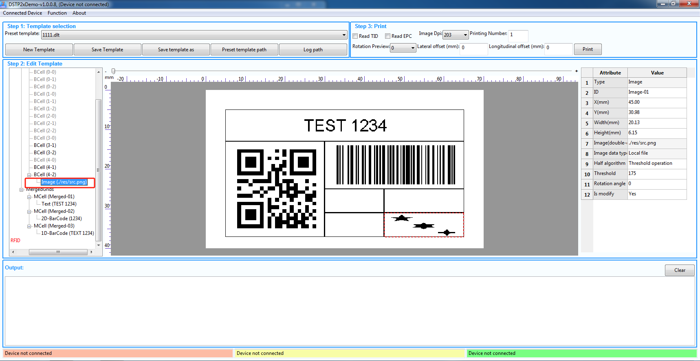
4.2.7、Add RFID to the label
Add EPC
Right-click on "RFID" in the label template navigation bar on the left side and select "Add EPC".
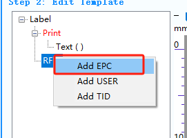
Data types: There are two types, HexStr and ASCII.
Epc Data Writing Rules:
① The written EPC data must be an integer multiple of 2 bytes in length.
For the ASCII type, one number occupies one byte. Therefore, the length of the data written in the ASCII type needs to be an integer multiple of 2.
Example:
ASCII: 1234abcd. The data actually written into the label chip is: 31 32 33 34 61 62 63 64 (because in the ASCII mode, it will be converted into the hexadecimal data corresponding to the ASCII code table before being written).
For the HexStr type, 2 numbers occupy one byte. Therefore, the length of the data written in the HexStr type needs to be an integer multiple of 4.
Example:
HexStr: 1234abcd. The data actually written into the label chip is: 12 34 ab cd.
② The length of the EPC cannot exceed the specifications of the label chip. For example, if the specification of the label chip is 96 bits, then the EPC can only be written with 96/8 = 12 bytes. If the length exceeds this limit, it cannot be written. With HexStr, 24 numbers can be written, and with the ASCII method, only 12 numbers can be written.
③ The ASCII type can write any character data in the ASCII code table, while the HexStr type can only write numbers from 0-9 and letters from a-f.
Read and Write Modes: There are three modes: WR, W, and R.
WR: The process is: write EPC - print - read EPC.
W: The process is: write EPC - print.
R: The process is: print - only read EPC.
The EPC attribute bar is shown in the following figure:
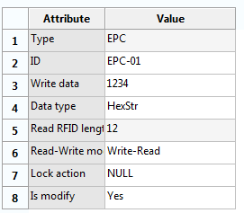
Add USER
Right-click on "RFID" in the label template navigation bar on the left side and select "Add USER".
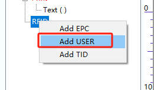
Data types: There are two types, HexStr and ASCII.
USER Data Writing Rules:
① The written USER data must be an integer multiple of 2 bytes in length.
For the ASCII type, one number occupies one byte. Therefore, the length of the data written in the ASCII type needs to be an integer multiple of 2.
Example:
ASCII: 1234abcd. The data actually written into the label chip is: 31 32 33 34 61 62 63 64 (because in the ASCII mode, it will be converted into the hexadecimal data corresponding to the ASCII code table before being written).
For the HexStr type, 2 numbers occupy one byte. Therefore, the length of the data written in the HexStr type needs to be an integer multiple of 4.
Example:
HexStr: 1234abcd. The data actually written into the label chip is: 12 34 ab cd.
② The length of the USER cannot exceed the specifications of the label chip. For example, if the specification of the label chip is 96 bits, then the USER can only be written with 96/8 = 12 bytes. If the length exceeds this limit, it cannot be written. With HexStr, 24 numbers can be written, and with the ASCII method, only 12 numbers can be written.
③ The ASCII type can write any character data in the ASCII code table, while the HexStr type can only write numbers from 0-9 and letters from a-f.
Read and Write Modes: There are three modes: WR, W, and R.
WR: The process is: write USER - print - read USER.
W: The process is: write USER - print. (It seems there was a wrong "X" in your original text, I assume it should be "W")
R: The process is: print - only read USER. (It seems there was a wrong "S" in your original text, I assume it should be "R")
The USER attribute bar is shown in the following figure:
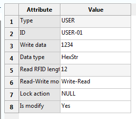
Add TID.
Right-click on "RFID" in the label template navigation bar on the left side and select "Add TID".
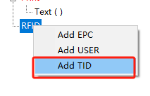
The TID data cannot be modified, and the read-write mode is only R (read-only).
The TID attribute bar is shown in the following figure:
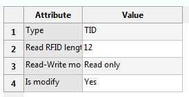
Printing effect
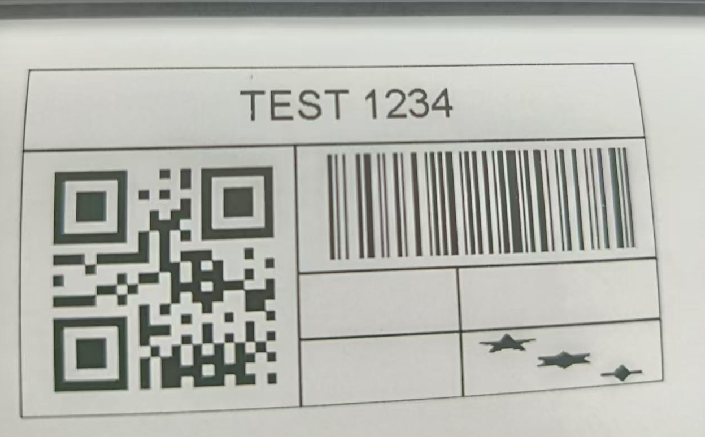
4.2.8、Save the template.
Steps to save a newly created template: After the template is edited -> Click on "Save Template As" -> Select the target folder path -> Name the template -> Save it.
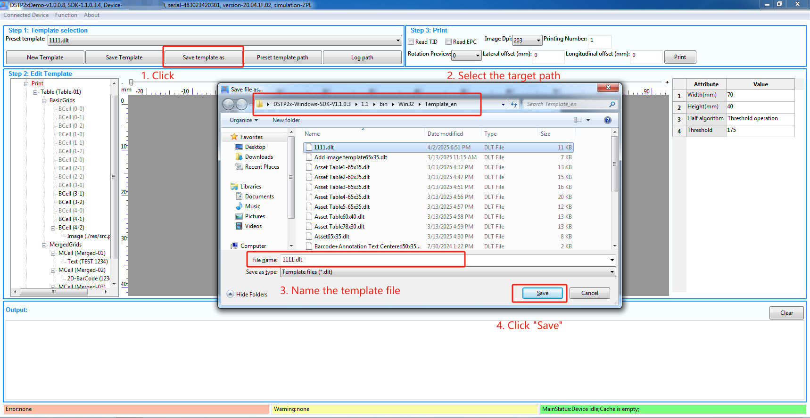
Steps to save a modified existing template: After modifying the template -> Click on "Save Template" to save it.
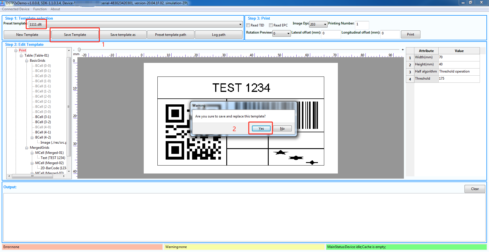
4.2.9、Drag and scale the template preview image.
When the content in the preview image is unclear or not fully displayed, you can scale, drag and move the preview image.
Scaling: Place the mouse cursor over the content you want to enlarge, and scroll the mouse wheel (or move the cursor above the preview image) to scale it.
Dragging: Hold down the left mouse button on the preview image, and you can drag it to move it up, down, left, or right.
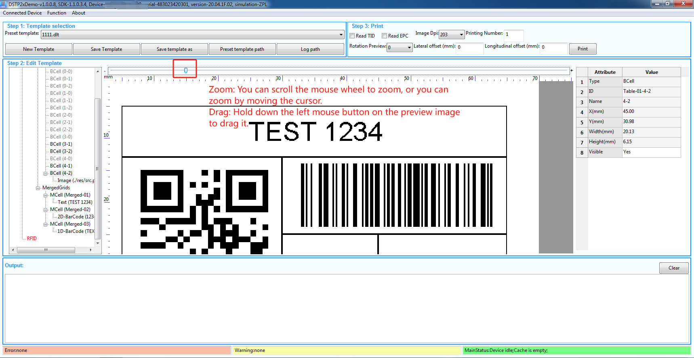
4.2.10、RFID tag locking and unlocking
Change password and lock tag
Specific process: Change new password - Write EPC with password - Lock label - Print
Settings: Click on the left navigation bar RFID - "Password Mode" to change to "Modify Mode",
Change Password:
Enter the original password (usually 00000000)
Set a new password (cannot be 00000000)
As shown in the following figure:
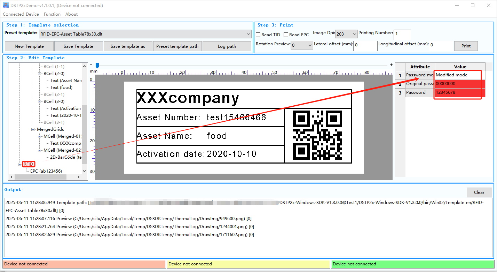
Click on EPC on the left navigation bar and change "Lock Action" to "Lock". Finally, click on "Print"; As shown in the following figure:
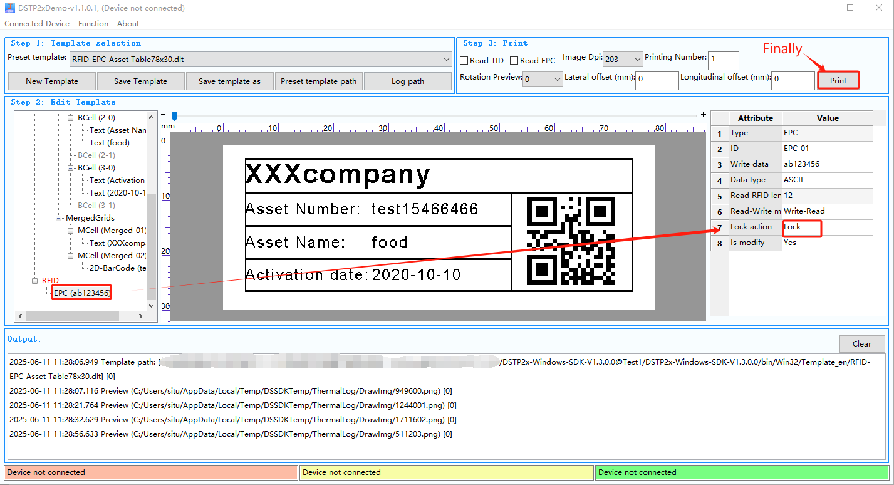
Unlock and rewrite RFID tags
Specific process: Unlock label - Write EPC with password - Print (applicable to locked labels)
Settings: Click on RFID - "Password Mode" in the left navigation bar to change it to "Modify Mode". Enter the correct password for the label in the "Password" column, as shown in the following figure:
Optional: If you need to re lock the tag, you can call the "Lock Tag" interface when integrating. Reference process: Unlock label - write EPC with password - lock label - print. (Applicable to tags that have been password modified and locked at the factory, decide whether to re lock them as needed.)
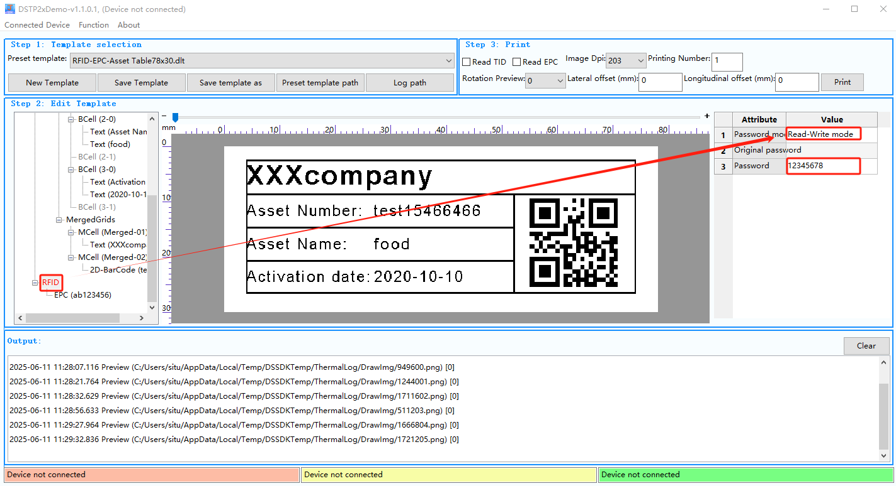
Click on EPC on the left navigation bar and change "Lock Action" to "Unlock". Finally, click on "Print"; As shown in the following figure:
4.2.11、Open the path of the log file.
If there are problems with using "DSTP2xDemo. exe" and it is not possible to clearly troubleshoot the issue, please provide the corresponding log files to relevant technical personnel for analysis and troubleshooting. Simply click the "Log Path" button to jump to the log directory.